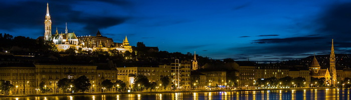
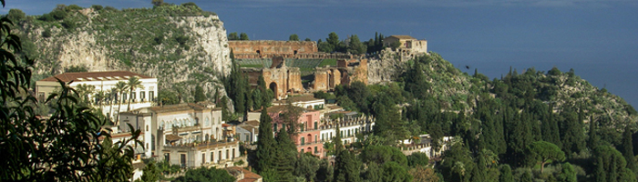
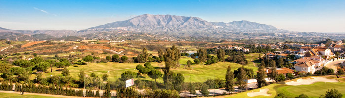

Europe
Thanks to centuries of history, popular movies and legendary literature, the allure of Europe's landscapes and cultures has been romanticized for ages. Many people dream of turning the European vacation in their hearts into reality. Here's a few places you should visit if you go to visit Europe.
Best places to visit:
Budapest, Hungary
There's so much to explore, such as the ruin bars, the Jewish Quarter, the Market Hall, the Museum of Terror, and Heroes Square. So much rich history fills this city. Whatever your interests are, you will find something to enjoy in Budapest. And now it's time to plan your trips to Budapest.
In Budapest, your attention is caught by intriguing details at almost every turn; you find yourself unknowingly heading towards colourful street art or an opulent Neo-Classical facade, and drawn into grand cafes by the aroma of freshly brewed coffee and the sight of elaborate cakes. It may take weeks, years or even a lifetime to fully explore Budapest's multi-faceted personality, but a little local insight is a great place to start. Here are five reasons to love Budapest that you might not have considered, according to people who live there.
Braga, Portugal

If you're looking for a slice of authentic Portugal, the sleepy northern city of Braga is the perfect spot to enjoy traditional Portuguese food and hospitality away from the tourists. Nestled among the hills between the fantastic Peneda-Geres National Park and the coast, it's a stop off the beaten track that's well worth it.
Monte Isola, Italy
Monte Isola is, as you can guess from the name, a mountain on an island in Lake Iseo, and also the largest inhabited lake island in Europe. It is the most visited destination on the lake because of the charming villages, the scenery and the monuments. Cars are not allowed on the island (unless you are the local doctor or priest!) but mopeds (for residents only) and bikes are allowed, and small buses operate to enable villagers and visitors to move between the villages.
Metz, France

Paris has the Seine, Metz has the Moselle river. Although the walk along the river isn't that long, you can go down the stairs at Moyen Pont, to feed the swans, get a closer look at the iconic Temple Neuf or maybe join one of the many joggers (not me, you'll find me at a cafe nearby!). On its own, Temple Neuf is just like any other church. But its position on the Moselle river island and the fact that it's surrounded by a beautiful park called Jardin d'Amour (Garden of Love) made it the highlight of the visit for me.
Poznan, Poland
Poznan is one of the oldest cities in Poland and once served as the capital during the 13th century. During the 10th and 11th century, Poznan was an important center in the early Polish state and the first rulers of Poland are in fact buried in the Basilica of St.Peter and St.Paul, the first cathedral in Poland, which is open to visitors. The history is definitely a great reason to visit Poznan and monuments, churches and old buildings help keep the memories of former greatness alive.
Malaga, Spain
Malaga province is home to some of Spain's most stunning coastline, so a visit to its capital city means you're never far from a beautiful beach. The city has two stretches of sand just a ten-minute walk from the port area, via the restaurant-packed thoroughfare Paseo del Muelle Uno.